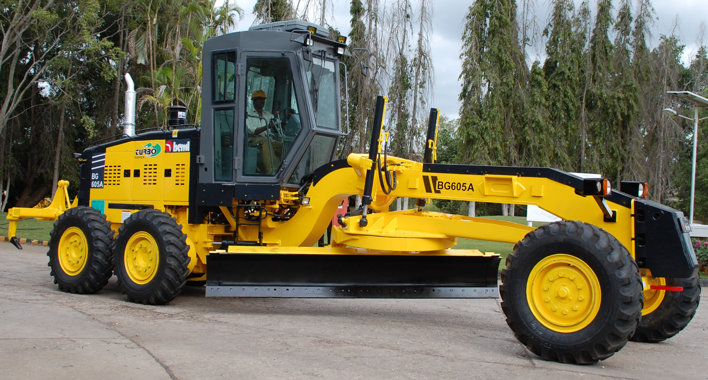
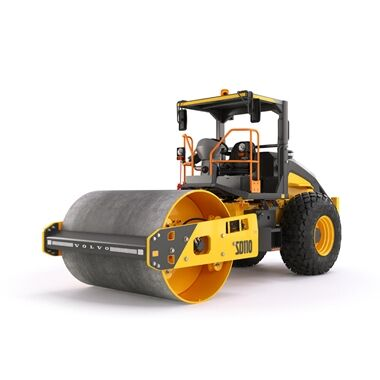
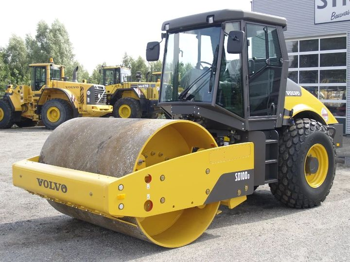

Our Equipments
Choose from the premium construction machinery and heavy equipment we provide.

Motor Grader BEML BG-605
Heavy-duty motor grader built by BEML Limited for road construction, precision grading, and major infrastructure projects.
Get Quote
Soil Compactor SD - 110
An 11-ton class single-drum vibratory roller engineered for high-performance compaction on highways, large infrastructure, and commercial building sites.
Get Quote
Soil Compactor SD - 100
A robust 10 single-drum soil compactor engineered for heavy-duty earthwork and road construction projects
Get Quote